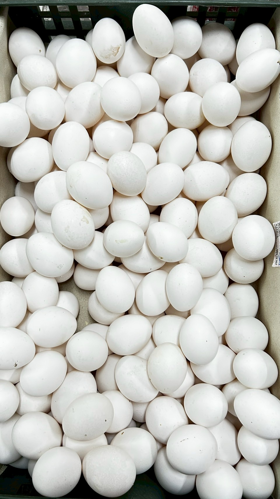
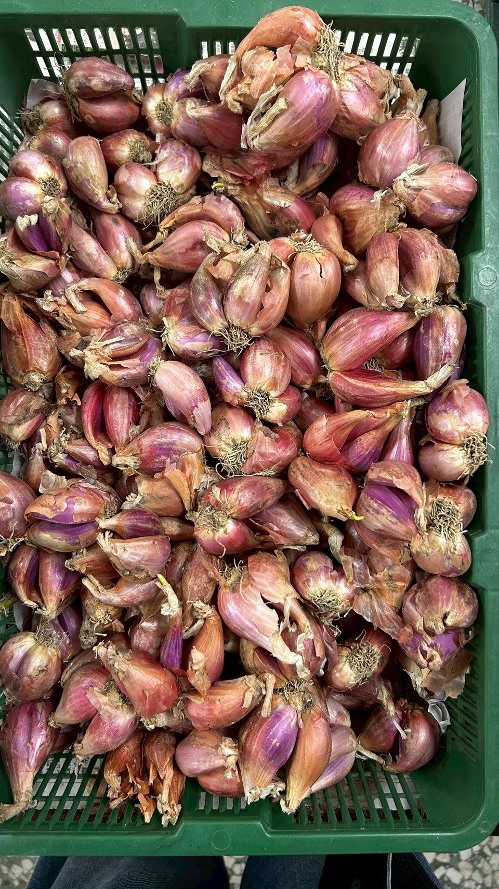
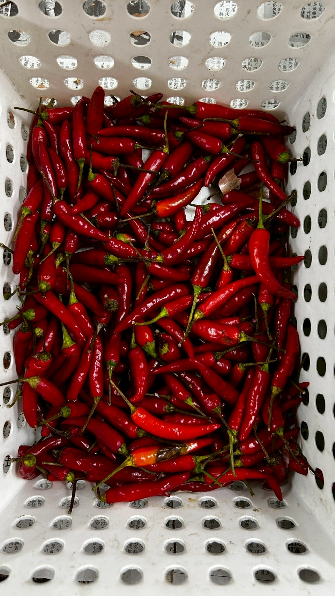
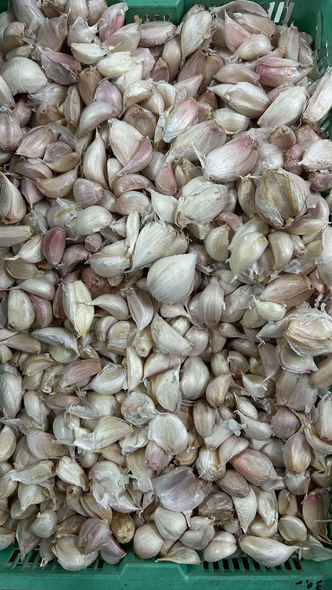
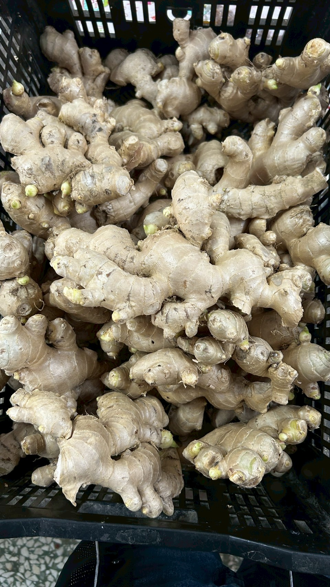
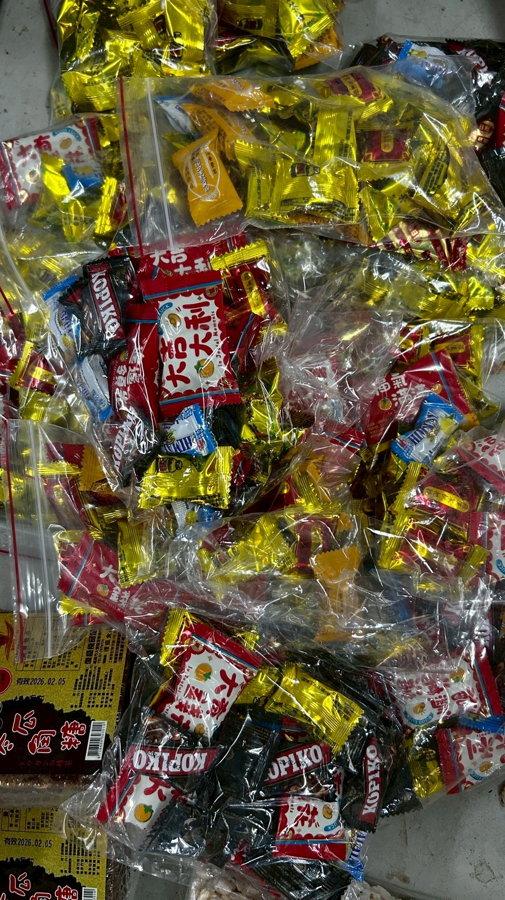
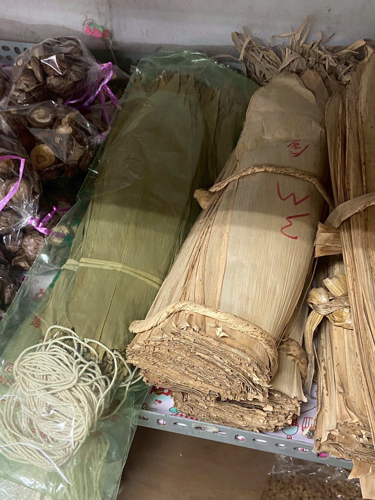

紅雞蛋
紅色雞蛋外殼，富含蛋白質和維生素B12，對健康有益，口感鮮美。

白雞蛋
外殼為白色，含有豐富的蛋白質，對人體發育有益，可做各式料理。

紅蔥頭
富含天然抗氧化成分，具有抗發炎的特性，常用於調味。

紅辣椒
辣椒富含維生素C，有助於提升免疫力，並具抗氧化功效。

蒜頭
大蒜含有強效的抗菌物質，有助於提升免疫系統，並對心臟健康有益。

薑
薑具有消炎、促進血液循環的功效，常見於料理或藥膳。

糖果
糖果是一種甜食，適合用來滿足甜食需求，但應適量食用。

粽葉
粽葉具有獨特的香氣，常用來包粽子或加入料理中，為菜肴增添風味。